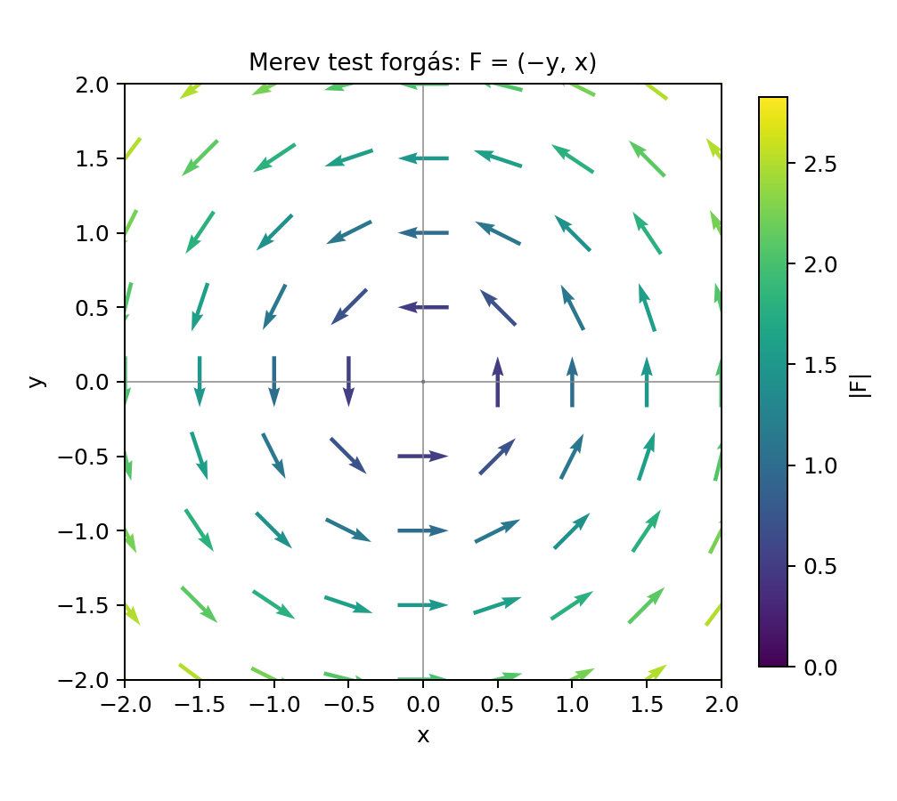
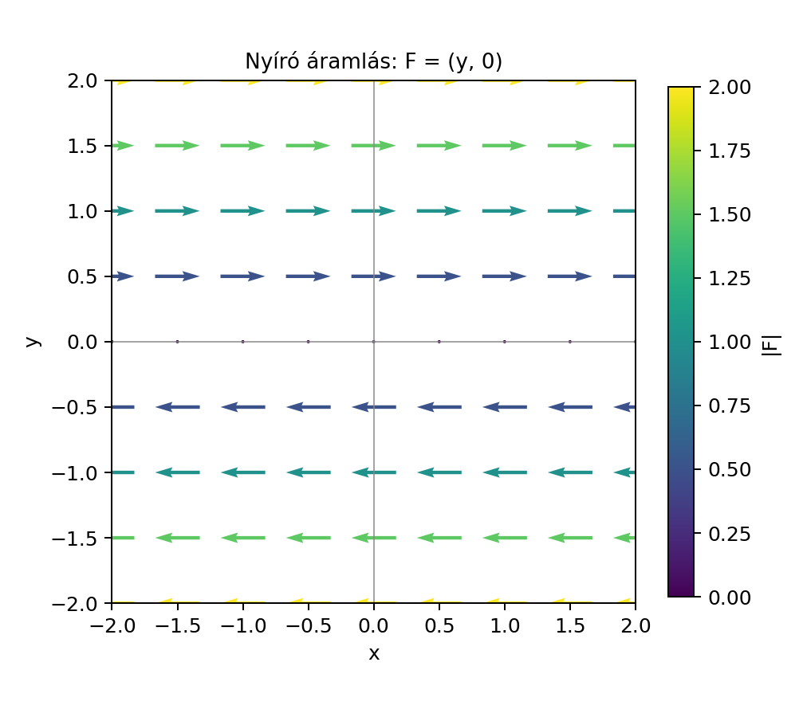

Képzeljünk el egy folyót, amelyben a víz balról jobbra áramlik, de a
part közelében lassabban, a meder közepén gyorsabban. Ha egy kis
lapátkereket helyezünk a vízbe, az nemcsak úszik az áramlással, hanem
forogni is kezd, annak ellenére, hogy a víz felszíne látszólag egyenes
vonalban halad. A forgás iránya és sebessége pontosan arról árulkodik,
hogy a sebességmezőben nyírás van: a szomszédos vízrétegek
sebessége különbözik.
A divergencia (lásd A divergencia: források és
nyelők) azt mérte, hogy egy pont környékén mennyi folyadék
„keletkezik” vagy „nyelődik el”. A rotáció (angolul curl) egy másik,
független tulajdonságot mér: azt, hogy a mező mennyire csavarja
a kis részecskéket, azaz mekkora a helyi örvénylés erőssége és iránya.
Ez a fogalom központi szerepet játszik a folyadékok áramlásában, az
elektromágnességben és a későbbi Stokes-tételben.
28.2.2 Szemléletes kép: a
lapátkerék
A rotáció legegyszerűbb képe egy parányi lapátkerék (paddle wheel),
amelyet a vektormezőbe helyezünk, és amely szabadon foroghat egy tengely
körül. Ha a mező a lapátkereket forgatni kezdi, akkor a rotáció abban a
pontban nem nulla. A forgástengely iránya éppen a rotációvektor iránya,
a forgás szögsebességének nagysága pedig a rotáció nagyságának a
fele.
A következő ábra két vektormezőt hasonlít össze. Az első a merev test
forgása:
.
A második egy nyíró áramlás:
.
Mindkettő forgatja a lapátkereket, de egészen más módon.

Merev test forgás: F = (−y, x) - A nyilak
körbe mutatnak; a rotáció minden pontban 2, a lapátkerék szögsebessége
ennek fele,
(a mező merev forgásának szögsebessége).

Nyíró áramlás: F = (y, 0) - A nyilak
vízszintesek, de a felső sorban nagyobbak; a rotáció −1, tehát a
lapátkerék az óramutató járásával megegyezően forog.
A bal oldali mezőben az áramvonalak körök, a jobb oldaliban
egyenesek, mégis mindkettő rotációja nem nulla. Az első példa azt
mutatja, hogy a kör alakú áramlás valóban örvénylik, a második pedig
arra figyelmeztet, hogy a rotáció nem az áramvonalak görbületét méri,
hanem a helyi forgást.
28.2.3 A síkbeli rotáció mint
cirkulációsűrűség
Először a síkbeli esetet vizsgáljuk. Legyen
folytonosan differenciálható vektormező. A rotációt a kis zárt görbe
menti cirkuláció és a bezárt terület hányadosának határértékeként
szeretnénk értelmezni.
Definíció (síkbeli rotáció). A síkbeli
vektormező rotációja (vagy rotációjának
-komponense)
az
pontban
A definíció indoklását adja a következő levezetés.
28.2.4 Levezetés: a kis téglalap
körüli cirkuláció
Tétel (síkbeli cirkulációsűrűség). Legyen
folytonosan differenciálható. Az
bal alsó csúcsú,
méretű téglalap határán, pozitív irányítással vett vonalintegrálra
Bizonyítási terv. A téglalap négy oldalát
külön-külön közelítjük lineárisan. Az alsó és felső oldal integráljából
a
függvény
szerinti változása, a jobb és bal oldal integráljából a
függvény
szerinti változása adja a keresett különbséget.
Szemléletes levezetés. Legyen a téglalap bal alsó
sarka
,
jobb felső sarka
.
A pozitív irányítás az óramutató járásával ellentétes, tehát a
bejárás:
alsó oldal:
-ból
-ba,
itt
;
jobb oldal:
-ból
-ba,
itt
;
felső oldal:
-ból
-ba,
itt
;
bal oldal:
-ból
-ba,
itt
.
A vonalintegrál az oldalakra bontva:
Most alkalmazzuk a lineáris közelítést. Mivel
folytonosan differenciálható,
Hasonlóan,
Ezeket az integrálokba helyettesítve, és a
-ban
első rendű tagokat megtartva:
A
-s
és
-s
alapintegrálok kiejtik egymást, így
A folytonosság miatt a deriváltak közelítőleg állandónak vehetők a
kis intervallumon, ezért
A
területtel osztva és a határértéket véve éppen a definícióbeli rotációt
kapjuk. A levezetés a
lépéseknél heurisztikus; a pontos bizonyítás ε-os becsléssel (a
Lagrange-tétellel és a deriváltak folytonosságával) a A Green-tétel alfejezetből is következik.
Ez a levezetés a Green-tétel előfutára: a A
Green-tétel alfejezetben ugyanezt az összefüggést általános, nem
csak téglalap alakú tartományokra bizonyítjuk majd.
28.2.5 Térbeli rotáció
Térben a rotáció vektor, amelynek három komponense a három
koordinátasíkra vonatkozó síkbeli rotációból áll össze.
Definíció (térbeli rotáció). Legyen
folytonosan differenciálható vektormező. A rotációja
kifejtve:
A determináns itt csak emlékeztető jelölés: az első sorban vektorok,
a második sorban deriválóoperátorok állnak, ezért a kifejtés nem
közönséges mátrix-determináns, hanem formális szabály.
Megjegyzés. Az elektrotechnikában a
képzetes egységet használják, de ez nem keverendő a
egységvektorral. A rotáció jelölésére a
és a
egyaránt használatos.
28.2.6 Példák
1. példa (merev test forgás). Legyen
.
Ekkor
,
,
tehát
A rotáció minden pontban
,
vagyis a lapátkerék mindenhol azonos szögsebességgel forog. Ez a mező
valóban egy
szögsebességű merev test forgásának sebességmezeje.
2. példa (nyíró áramlás). Legyen
.
Ekkor
,
,
tehát
Az áramvonalak vízszintes egyenesek, a rotáció mégis nem nulla. A
lapátkerék az óramutató járásával megegyező irányban forog, mert a felső
rétegek gyorsabban haladnak jobbra, mint az alsók. Ez mutatja, hogy a
rotáció a helyi forgást méri, nem az áramvonalak alakját.
3. példa (potenciálos mező). Legyen
,
és
.
Ekkor
A gradiens mező rotációja mindig nulla, amint azt a következő
szakaszban általánosan is belátjuk.
28.2.7 Rotáció, gradiens és
divergencia kapcsolata
Tétel. Ha
kétszer folytonosan differenciálható skalármező, akkor
Ha
kétszer folytonosan differenciálható vektormező, akkor
Bizonyítás (rot grad). Legyen
kétszer folytonosan differenciálható. Ekkor
.
A rotáció definíciója szerint az első komponens:
A Young-tétel szerint a vegyes parciális deriváltak felcserélhetők,
így
,
tehát az első komponens
.
A másik két komponens hasonlóan számolva szintén
.
∎
A 3. példa azt mutatta, hogy ha egy vektormező gradiens, akkor
rotációja nulla. A megfordítás nem minden tartományon igaz, de a
gyakorlatban legfontosabb esetekben igen.
Tétel (szükséges feltétel potenciálra). Ha
valamely folytonosan differenciálható
skalármezőre, akkor
.
Megjegyzés (elégséges feltétel). Ha egy vektormező
rotációja nulla egy egyszeresen összefüggő tartományon, akkor
van potenciálfüggvénye. Ennek bizonyításához a Stokes-tételre van
szükség, ezért ezt a A Stokes-tétel és a
Maxwell-egyenletek alfejezetben tárgyaljuk. A feltétel fontosságát
mutatja a következő ellenpélda: az
mező rotációja nulla az origón kívül, de az origót megkerülő zárt
görbe menti cirkuláció
,
ezért nincs globális potenciálfüggvénye az
tartományon.
28.2.9 Merev test forgása:
Legyen
állandó szögsebességvektor. Egy merev test
pontjának sebessége
Számítsuk ki a rotációt komponensenként. Az első komponens:
A második komponens:
A harmadik komponens:
Tehát
Ez az eredmény megmagyarázza, miért éppen a rotáció a helyi forgás
mérőszáma: egy merev test forgásában a rotáció a szögsebesség
kétszerese.
28.2.10 Valós életbeli
alkalmazás
28.2.10.1 Folyó sodrása a part
közelében
Modellezzük egy folyó sebességmezejét úgy, hogy a víz a parttól mért
távolságtól függően,
irányban halad:
ahol
,
állandó. Ez azt jelenti, hogy a parton
()
a sebesség nulla, attól távolodva pedig lineárisan nő. A rotáció:
A rotáció negatív, tehát a lapátkerék az óramutató járásával
megegyező irányban forog. Ez a nyíró áramlás tipikus példája: a folyó
felszíne simának látszik, de a különböző sebességű rétegek közötti
súrlódás örvénylést kelt.
28.2.10.2 Tornádó modellje
Egy egyszerű tornádómodellben a sebességmező két részből áll. A
magban a levegő közel merev testként forog
szögsebességgel:
tehát ott
.
A magon kívül,
esetén a sebességmező gyakran közelítőleg potenciálos örvény:
ahol
a cirkuláció. Számítsuk ki ennek rotációját az origón kívül. Legyen
Ekkor
és
Így
Tehát a tornádó külső része örvénymentes, annak ellenére,
hogy az áramvonalak körök! A lapátkerék a külső tartományban nem forog a
saját tengelye körül, miközben a levegő körbeáramlik. Ez a példa jól
mutatja, hogy a rotáció a helyi forgást méri, nem a kör alakú
pályát.
28.2.11 Tipikus hibák
A rotáció és a divergencia keverése. A
divergencia a forráserősséget, a rotáció az örvényerősséget méri.
Például az
mező forrásos, hiszen
,
de rotációja
.
Fordítva, az
mező rotációja
,
de divergenciája
.
„Kör alakú áramvonalak ⇒ rotáció nem nulla.” Ez
hamis, ahogy a potenciálos örvény példája mutatta. A kör alakú pálya
mozgathat úgy, hogy a folyadékrészecskék maguk nem forognak.
A determináns kifejtésének elrontása. A térbeli
rotáció képletében a második sor a deriválóoperátoroké, a harmadik a
komponenseké. Gyakori hiba, hogy az első komponensbe
helyett
kerül. A mnemonikus determinánst mindig a megadott sorrendben kell
kifejteni.
A rot grad = 0 azonosság feltételeinek
elhagyása. Ha a vegyes parciális deriváltak nem folytonosak, a
Young-tétel nem alkalmazható. A klasszikus esetekben azonban a
folytonosság teljesül.
28.2.12 Önellenőrzés
Számítsd ki az
síkbeli vektormező rotációját.
Igaz-e: ha egy síkbeli vektormező áramvonalai körök, akkor rotációja
biztosan nem nulla?
Az
mező egy merev test forgását írja le. Mennyi a szögsebesség?
Mi a rotáció geometriai/fizikai jelentése?
Számítsd ki az
rotációjának harmadik komponensét.
28.2.13 Feladatok
1. feladat (A). Számítsd ki az
rotációját mindhárom komponensben.
2. feladat (A). Számítsd ki az
rotációját, és értelmezd a lapátkerék-képpel.
3. feladat (B). Mutasd meg, hogy az
vektormező rotációja nulla az origón kívül. Ez a mező a potenciálos
örvény egy variánsa; a A Stokes-tétel és a
Maxwell-egyenletek alfejezetben látjuk majd, miért nincs globális
potenciálja az origó miatt.
4. feladat (B). Egy sebességmező
,
ahol
.
Hol forog a lapátkerék, milyen irányban, és mekkora a rotáció
nagysága?
5. feladat (C). Bizonyítsd be: ha
kétszer folytonosan differenciálható, akkor
6. feladat (D). Egy folyó sebességprofilja a parttól
mért
távolság függvényében
ahol
és
a meder szélessége. Számítsd ki a rotációt mint
függvényét. Hol maximális a rotáció nagysága, és mekkora ott a
lapátkerék szögsebessége?
28.2.14 Megoldások
28.2.14.1 Önellenőrzés –
válaszok
.
Hamis. A potenciálos örvény áramvonalai körök, rotációja mégis
nulla.
,
mert
,
és
miatt
.
A rotáció a vektormező helyi örvénylését méri: iránya a
forgástengely, nagysága a helyi szögsebesség kétszerese.
A harmadik komponens:
.
28.2.14.2 Feladatok megoldása
1. feladat.
,
,
.
A rotáció:
Ellenőrzés: a komponensek deriváltjai folytonosak, a számolás
egyszerű.
2. feladat.
,
,
tehát
A lapátkerék az óramutató járásával megegyező irányban forog,
szögsebességgel.
3. feladat. Legyen
Ekkor
és
Így
Tehát a rotáció nulla az origón kívül.
4. feladat.
,
tehát
,
,
.
A rotáció:
A lapátkerék a
tengely körül, az óramutató járásával megegyező irányban forog, a
rotáció nagysága
,
a szögsebesség
.
5. feladat. Számítsuk ki a három parciális
deriváltat:
Összegük:
Mivel a vegyes parciális deriváltak a folytonosság miatt
felcserélhetők,
,
és
,
így a hat tag páronként kiejti egymást, az összeg
.
∎
6. feladat. A rotáció a síkbeli képlet szerint:
Behelyettesítve
és
:
A rotáció nagysága lineárisan változik:
-nál
,
-nál
.
A legnagyobb nagyság a két partnál van,
.
Ott a lapátkerék szögsebessége
.
A rotáció előjele a partoknál ellentétes, tehát a két oldalon ellentétes
irányban forogna a lapátkerék.
28.2.15 Rövid összefoglaló
A rotáció a vektormező helyi örvénylését méri. Síkban, ha
,
akkor
és ez a kis zárt görbe menti cirkuláció területi sűrűsége. Térben a
rotáció vektor: